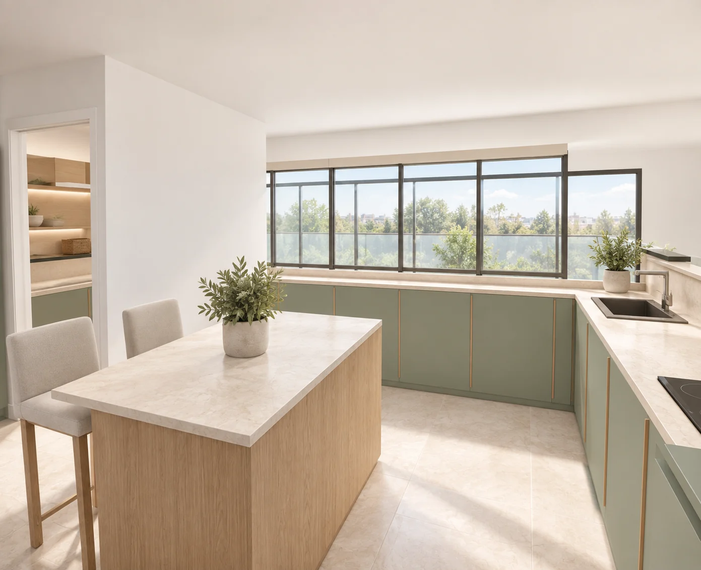

{kind=link}
Opção 01
Natural contemporâneo
Verde sálvia, carvalho natural e pedra creme. Continuidade com o ambiente atual.
Casa nova / Cozinha · V12
Armários suspensos, ilha com prateleiras, garrafeira junto à lavandaria e frigorífico alinhado com a despensa. Compara os materiais ou entra no modelo para rodar a cozinha e mostrar as medidas.
Não foi possível abrir esta imagem. Mantém o HTML e as imagens na pasta do projeto.
Verde sálvia, carvalho natural e pedra creme. Continuidade com o ambiente atual.
Arrasta para rodar, aproxima com a roda do rato ou dois dedos. No painel do modelo podes escolher um dos cinco ambientes, mostrar medidas e ocultar os suspensos. O modelo mantém a mesma geometria em todas as opções.
Os sete pontos desta revisão
A mesma cozinha, diferentes materiais
As imagens ilustram os ambientes; a planta e o modelo mantêm as dimensões da proposta. O natural contemporâneo dá continuidade ao estudo anterior.
Opção 01
Verde sálvia, carvalho natural e pedra creme. Continuidade com o ambiente atual.
Opção 02
Frentes areia, madeira clara, pedra marfim e poucos objetos. Um conjunto sereno e depurado.
Opção 03
Barro suave, branco quente, carvalho lavado e apontamentos de cerâmica artesanal.
Opção 04
Azul profundo, portas com moldura discreta, pedra clara e puxadores em latão.
Opção 05
Grafite, nogueira, pedra cinzenta clara e metal escuro, com textura quente da madeira.
A planta como referência
Medidas calculadas no modelo, com portas fechadas. Os nichos da ilha ficam dentro do volume de 90 × 140 cm. As prateleiras do pladur projetam-se 15 cm para a cozinha.
Largura de origem: 5,135 m. Entrada da lavandaria: 90 cm. Suspensos propostos: 35 cm de fundo, entre 1,55 e 2,30 m de altura. A varanda e os vãos sem cota continuam estimados. A instalação dos aparelhos, o afastamento do exaustor e os reforços de fixação no pladur dependem da definição dos equipamentos e da obra.
Evolução do estudo

As versões anteriores registam outras disposições. A proposta atual é a V12.


Estas plantas registam o ponto de partida. As alterações posteriores estão representadas nas imagens e nas notas de cada versão.
Explora as imagens, consulta as medidas ou abre o modelo 3D.
{kind=link}
{kind=link}
{kind=link}
{kind=link}
{kind=link}